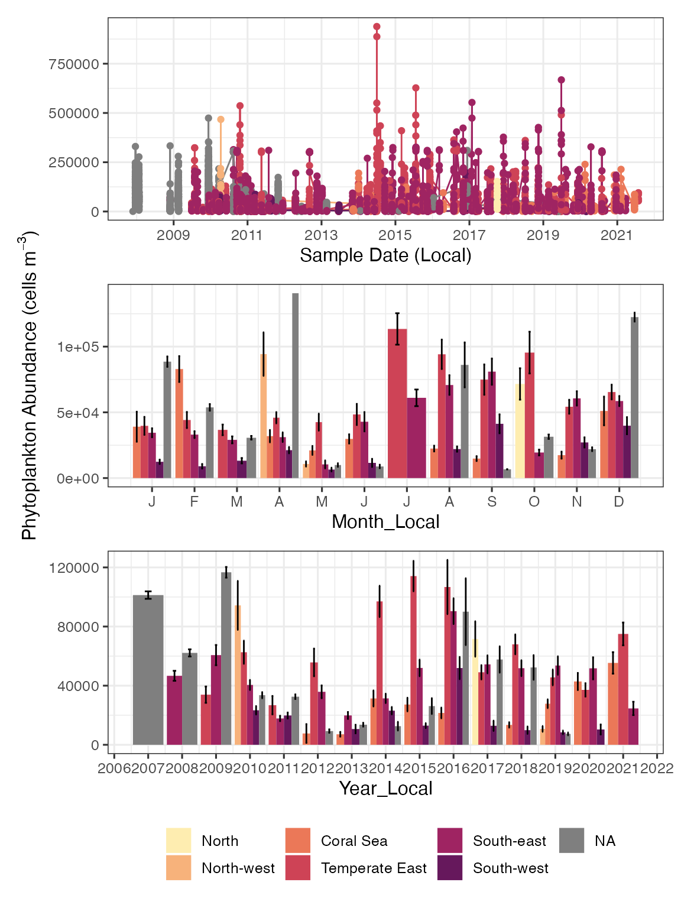
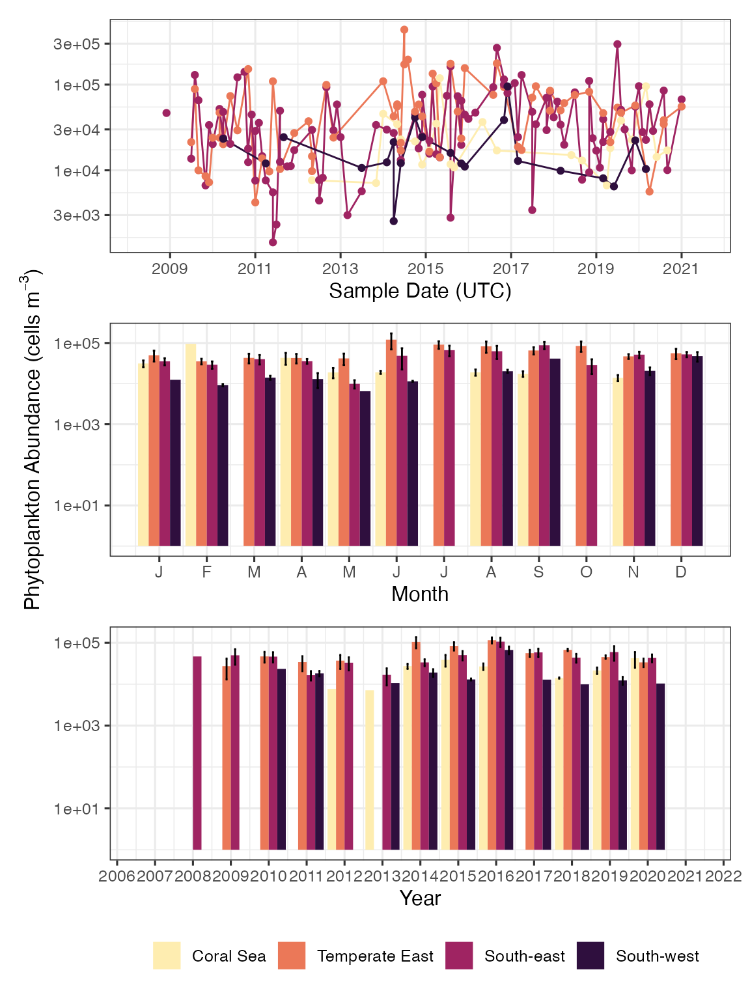
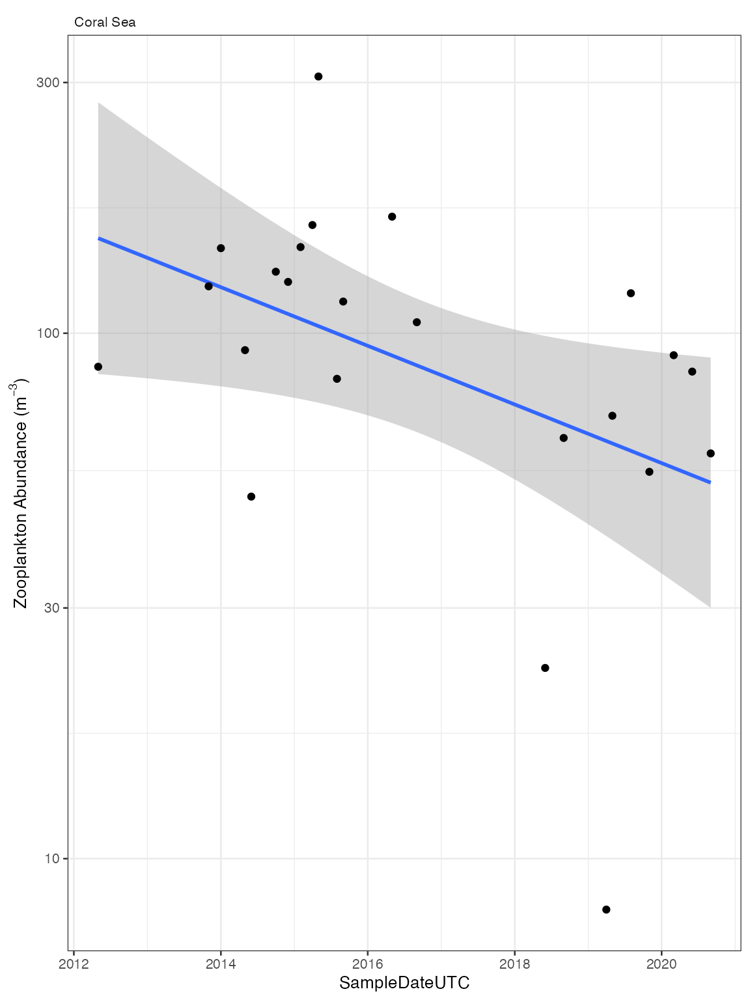
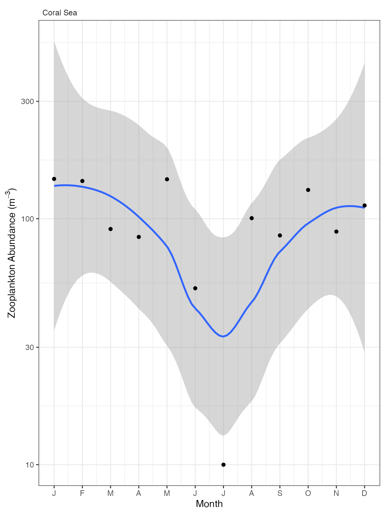

Analysing CPR timeseries
Claire H. Davies and Jason D. Everett
Monday 11 July 2022
Source:vignettes/CPR_ts.Rmd
CPR_ts.RmdIMOS Biological Ocean Observer
You can access the online version of IMOS BOO here links
Load packages and data
This vignette demonstrates how to use planktonr to generate timeseries from the IMOS National Reference Station data.
First install the package from github if needed
remotes::install_github("PlanktonTeam/planktonr")Then attach the library
Phytoplankton Abundance Data
Lets look at phytoplankton abundance across the bioregions.
First we get the data then we filter it for the desired parameters.
datCPR_p <- pr_get_Indices("CPR", "P") %>%
filter(parameters == "PhytoAbundance_Cellsm3") %>%
droplevels()This data is structured by bioregion. Lets look at where the bioregions are.
# pr_plot_CPRmap(datCPR_p)Then we can plot the data as a timeseries
pr_plot_tsclimate(datCPR_p, "CPR") 
Perhaps the story will be clearer using a log scale
pr_plot_tsclimate(datCPR_p, "CPR", "log10")
Examine Diatom:Dinoflagellate Ratio
The south-west has consistently lower abundances than the regions on the east coast, with the highest abundances occuring in the temperate-east. Can we see more variation in the diatom to dinoflagellate rations across the regions?
datRat <- pr_get_Indices("CPR", "P") %>%
filter(parameters == "DiatomDinoflagellateRatio") %>%
droplevels()And then plot the total timeseries
pr_plot_tsclimate(datRat, "CPR")
The South-west region has more dinoflagellates than the eastern regions with the highest abundances of diatoms seen in the South-east and temperate East regions.
Zooplankton Abundance Data
Look to see if zooplankton abundance is changing in the tropical Coral Sea region.
datNRSz <- pr_get_Indices("CPR", "Z") %>%
filter(parameters == "ZoopAbundance_m3" & BioRegion == "Coral Sea") %>%
droplevels()
pr_plot_Trends(datNRSz, Trend = "Raw", Survey = "CPR", method = "lm", trans = "log10")
Now lets check the seasonal cycle.
pr_plot_Trends(datNRSz, Trend = "Month", Survey = "CPR", method = "loess", trans = "log10")